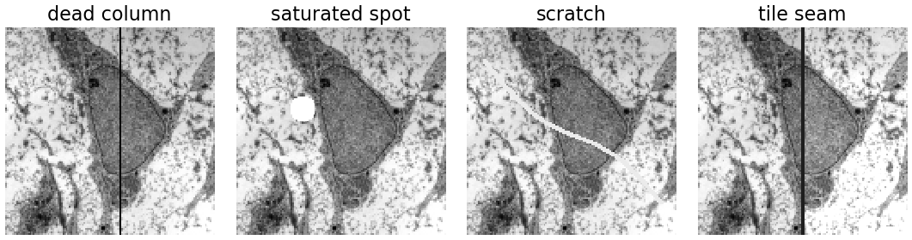
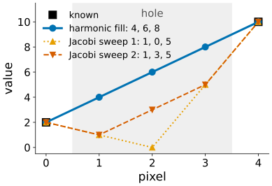
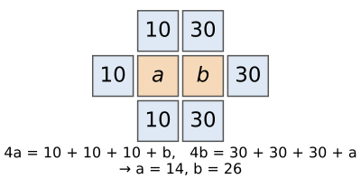
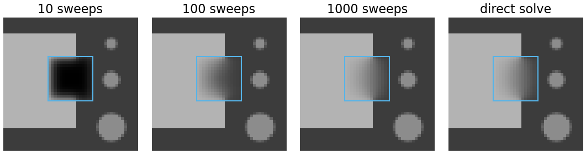
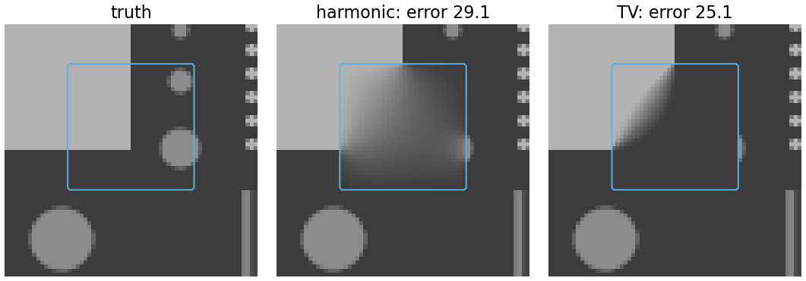
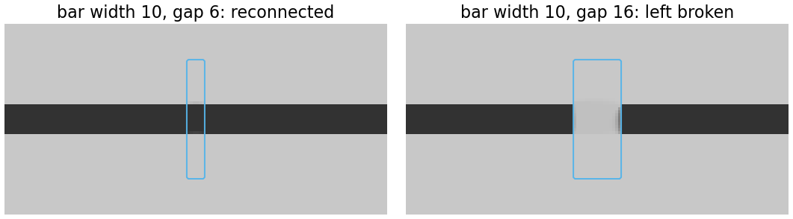
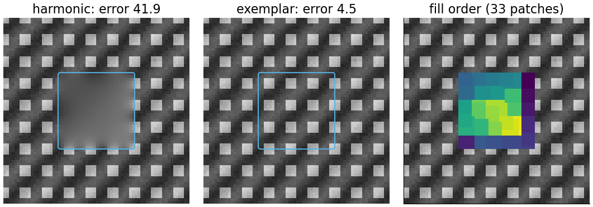
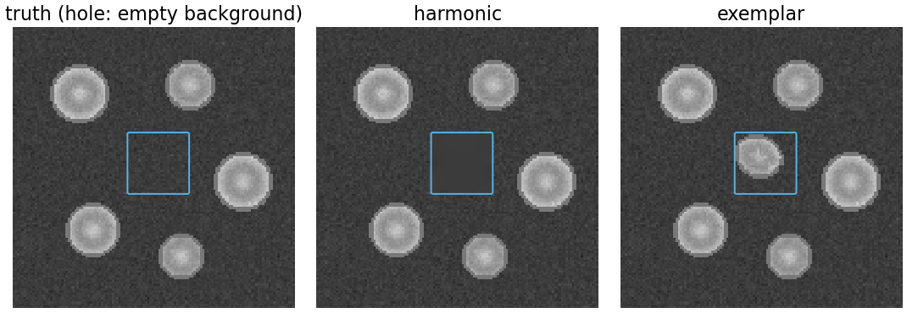

Some pixels of an image are missing or wrong: a dead column, a saturated spot, a scratch, a burnt-in scale bar. Inpainting fills them from the rest of the image.
Slides titled The math give the formulas and proofs; the ideas are complete without them.
Why fill instead of leave? Many algorithms need a full image: a Fourier transform, a registration, a filter, a segmentation that should not trip over a black column.
Inpainted pixels are invented. Keep the mask, and exclude those pixels from every measurement.

Synthetic defects on the micrograph: Robert M. Hunt, CC BY 3.0, via Wikimedia Commons.
Keep the known pixels fixed and let the heat equation run only inside the hole until nothing changes any more.
At equilibrium every hole pixel is the mean of its four neighbours: the hole solves Laplace’s equation, with the rim as boundary values. The result is the smoothest possible fill.
In 1D this is linear interpolation: known 2 and 10 around three missing pixels → 4, 6, 8.
Starting from zeros, Jacobi sweeps (every hole pixel ← mean of its neighbours’ old values) give (1, 0, 5), then (1, 3, 5), …, converging to (4, 6, 8).

Two missing pixels a, b side by side. The other three neighbours of a are 10, those of b are 30. Each is the mean of its neighbours:
4a = 10 + 10 + 10 + b, \qquad 4b = 30 + 30 + 30 + a.
From the first, b = 4a - 30; into the second: 16a - 120 = 90 + a, so a = 14, b = 26.
Each missing pixel leans towards its own side but feels the other: a smooth transition across the hole. A system of equations, one per missing pixel: sparse and linear.

Jacobi is the heat equation, so information from the rim spreads like heat: a distance of w pixels takes about w^2 sweeps (the \sigma^2 law of the first unit).
Square holes, sweeps until every pixel is within 1 grey level of the solution:
| hole width | 8 | 16 | 32 |
|---|---|---|---|
| Jacobi sweeps | 77 | 288 | 1081 |
Doubling the width costs about four times the sweeps. Gauss–Seidel (use new values at once) is about twice as fast; a direct sparse solve (conjugate gradients) needs a few dozen iterations.

Harmonic inpainting is perfect for thin holes: a dead column or a scratch is one or two pixels wide, and the fill is a short interpolation.
For a large hole the fill is a smooth blend of the rim: edges entering the hole fade out, objects inside it are lost, texture becomes a featureless smear.
Here a 32 × 32 hole over the square’s corner and two small discs: the harmonic fill is a soft gradient (mean error 29 grey levels).
TV inpainting minimises the total variation instead of \sum|\nabla u|^2: edges are continued sharply (error 25). It cuts the corner diagonally: the shortest boundary, not the true corner.

TV charges an edge by contrast × length. A dark bar of width w is interrupted by a gap of length d. Two candidate fills:
TV picks the cheaper: the bar is reconnected if d < w, left broken if d > w.
Bar width 10: a gap of 6 is bridged (centre 50, as dark as the bar), a gap of 16 is not (centre 200).
Curvature-based and “transport” methods (continue level lines smoothly, Bertalmío et al.) can bridge longer gaps and curved edges.

For texture no smooth fill is right: the hole should look like the rest. So copy (Efros & Leung 1999; Criminisi, Pérez & Toyama 2004):
Edges are continued first, texture fills in after. The dot texture: harmonic error 41.9, exemplar 4.5.

Exemplar inpainting copies whatever matches best, including objects. Here the hole covers empty background next to a nucleus; the patches along the rim match the edges of other nuclei, and the fill grows a nucleus into the hole (244 pixels brighter than 120 where the truth never exceeds 80).
The result looks plausible. It is a fabrication.
A generative model fills holes even more convincingly with a learned prior (inpainting with a learned prior); the same rule applies, more strongly.

| defect | method | why |
|---|---|---|
| thin: dead pixel or column, scratch | harmonic | short interpolation, smooth is right |
| medium hole with edges crossing it | TV | continues edges sharply (across short gaps) |
| texture, or a large hole | exemplar | only copying reproduces texture |
| anything you will measure | none | mask the pixels and exclude them |